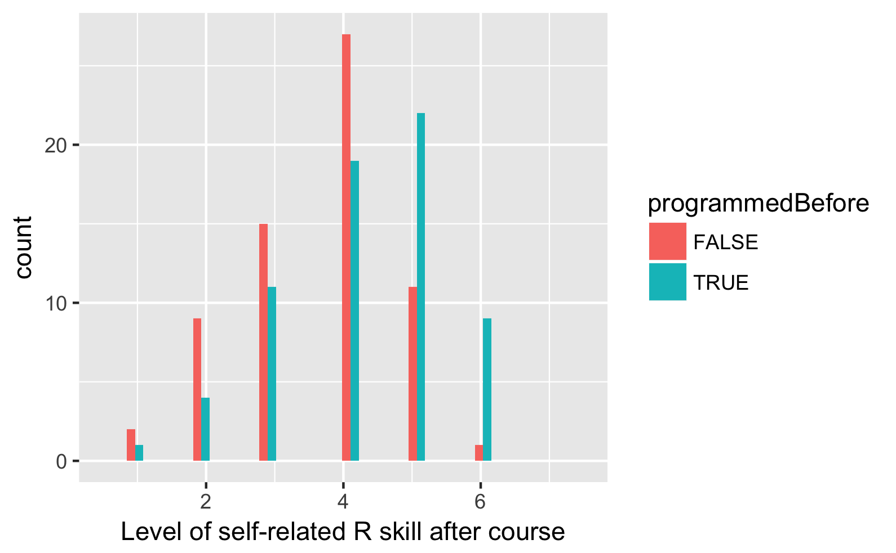

This was originally posted on Blogger here.
Last week we wrapped Stats 60/Psych 10, which was the first time I have ever taught such a course. One of the goals of the course was for the students to develop enough data analysis skill in R to be able to go off and do their own analyses, and it seems that we were fairly successful in this. To quantify our performance I used data from an entrance survey (which asked about previous programming experience) and an exit survey (which asked about self-rated R skill on a 1-7 scale). Here are the data from the exit survey, separated by whether the students had any previous programming experience:

This shows us that there are now about fifty Stanford undergrads who had never programmed before and who now feel that they have at least moderate R ability (3 or above). Some comments on the survey question “What were your favorite aspects of the course?” also reflected this (these are all from people who had never programmed before):
- The emphasis on learning R was valuable because I feel that I’ve gained an important skill that will be useful for the rest of my college career.
- I feel like I learned a valuable skill on how to use R
- Gradually learning and understanding coding syntax in R
- Finally getting code right in R is a very rewarding feeling
- Sense of accomplishment I got from understanding the R material on my own
At the same time, there was a substantial contingent of the class that did not like the coding component. This was evident to some comments on the survey question “What were your least favorite aspects of the course?”:
- R coding. It is super difficult to learn as a person with very little coding background, and made this class feel like it was mostly about figuring out code rather than about absorbing and learning to apply statistics.
- My feelings are torn on R. I understand that it’s a useful skill & plan to continue learning it after the course (yay DataCamp), but I also found it extremely frustrating & wouldn’t have sought it out to learn on my own.
- I had never coded before, nor have I ever taken a statistics course. For me, trying to learn these concepts together was difficult. I felt like I went into office hours for help on coding, rather than statistical concepts.
One of the major challenges of the quarter system is that we only have 10 weeks to cover a substantial amount of material, which has left me asking myself whether it is worth it to teach students to analyze data in R, or whether I should instead use one of the newer open-source graphical statsitics packages, such as JASP or Jamovi. The main pro that I see of moving to a graphical package are that the students could spend more time focusing on statistical concepts, and less time trying to understand R programming constructs like pipes and ggplot aesthetics that have little to do with statistics per se. On the other hand, there are the several reasons that I decided to teach the course using R in the first place:
- Many of the students in the class come from humanities departments where they would likely never have a chance to learn coding. I consider computational literacy (including coding) to be essential for any student today (regardless of whether they are from sciences or the humanities), and this course provides those students with a chance to acquire at least a bit of skill and hopefully inspires curiosity to learn more.
- Analyzing data by pointing and clicking is inherently non-reproducible, and one of the important aspects of the course was to focus the students on the importance of reproducible research practices (e.g. by having them submit RMarkdown notebooks for the problem sets and final project).
- A big part of working with real data is wrangling the data into a form where the statistics can actually be applied. Without the ability to code, this becomes much more difficult.
- The course focuses a lot on simulation and randomization, and I’m not sure that the interactive packages will be useful for instilling these concepts.
I’m interested to hear your thoughts about this tradeoff: Is it better for the students to walk away with some R skill but less conceptual statistical knowledge, or greater conceptual knowledge without the ability to implement it in code? Please leave your thoughts in the comments below.
14 comments captured from the original post
deevybee · 2018-03-25
Sarah Chang · 2018-03-25
Russ Poldrack · 2018-03-25
Anonymous · 2018-03-25
Mr.Rocks · 2018-03-25
Russ Poldrack · 2018-03-25
Mr.Rocks · 2018-03-25
Russ Poldrack · 2018-03-25
daniele · 2018-03-25
Russ Poldrack · 2018-03-26
David · 2018-03-26
Russ Poldrack · 2018-03-26
Jonathon · 2018-03-27
GTraveller · 2018-03-28